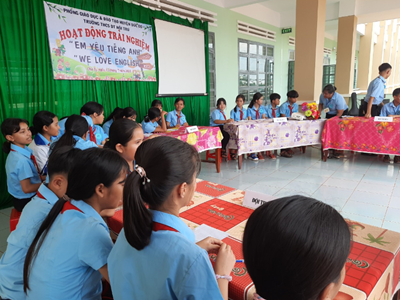
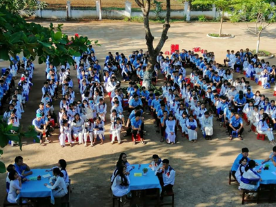
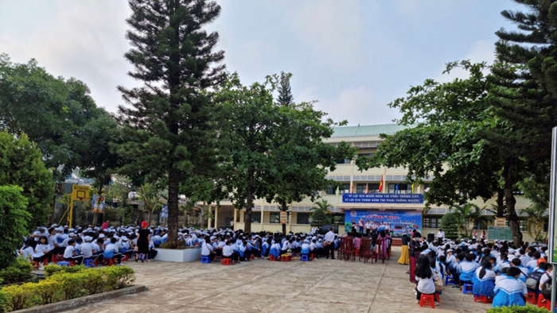
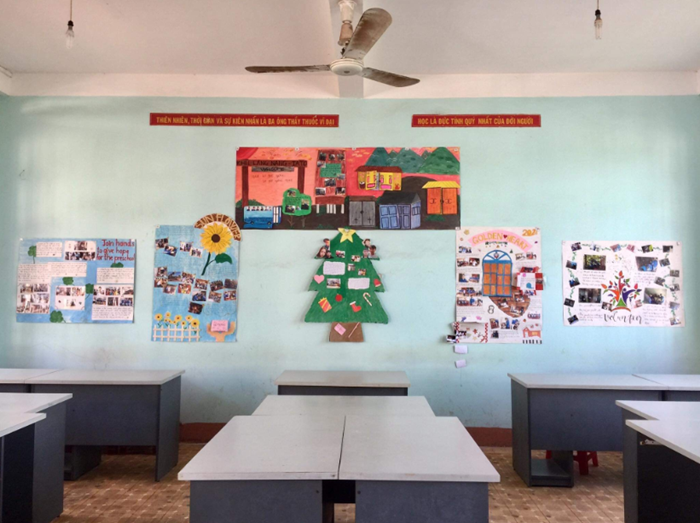

“Môi trường dạy học và sử dụng tiếng Anh trên địa bàn tỉnh Gia Lai- Kết quả ban đầu và định hướng phát triển trong thời gian tới”
Trong thời gian qua, các hoạt động xây dựng môi trường học và sử dụng tiếng Anh đã được Sở Giáo dục và Đào tạo (GDĐT) Gia Lai tổ chức phát động và triển khai đến các cơ sở giáo dục trên địa bàn tỉnh. Hoạt động này mặc dù đã đạt được những kết quả bước đầu nhưng vẫn còn gặp không ít khó khăn, vướng mắc. Qua phân tích thực trạng và đánh giá triển vọng xây dựng và phát triển môi trường học, sử dụng tiếng Anh, Sở GDĐT tiếp tục chỉ đạo tăng cường các hoạt động xây dựng môi trường ngoại ngữ trong nhà trường theo đúng chỉ đạo của Bộ GDĐT, phù hợp với điều kiện thực tế tại địa phương.
Những kết quả ban đầu trong công tác xây dựng môi trường dạy học và sử dụng tiếng Anh.
Trong những năm qua, phong trào học ngoại ngữ tại các trường phổ thông trên địa bàn tỉnh đã được quan tâm chú trọng, trong đó việc tạo môi trường ngoại ngữ được triển khai sâu rộng trong toàn ngành. Tuy nhiên, đối với các hoạt động điển hình của môi trường ngoại ngữ (hoạt động xây dựng môi trường dạy học và sử dụng tiếng Anh) như hoạt động ngoại khóa có sử dụng tiếng Anh, Câu lạc bộ tiếng Anh, thi hùng biện tiếng Anh… mới chỉ được tập trung tổ chức ở một số cơ sở giáo dục đóng chân ở vùng thuận lợi hoặc nơi có chất lượng học tiếng Anh tương đối tốt như trường THPT chuyên Hùng Vương, THPT Phan Bội Châu, THPT Quang Trung.v.v.. Sau khi có sự chỉ đạo, hướng dẫn từ Bộ GDĐT (Công văn 4536/BGDĐT-GDCTHSSV ngày 04/10/2019 hướng dẫn triển khai thực hiện phong trào học tiếng Anh, xây dựng và phát triển môi trường học và sử dụng ngoại ngữ), Sở GDĐT đã chủ động xây dựng kế hoạch và chỉ đạo các đơn vị tăng cường xây dựng và phát triển môi trường ngoại ngữ tại Văn bản số 1964/SGDĐT-GDTrH ngày 12/11/2019 về việc Thực hiện phong trào học Tiếng Anh, xây dựng và phát triển môi trường học và sử dụng ngoại ngữ trong các trường phổ thông tỉnh Gia Lai từ năm học 2019-2020.
Với tinh thần quyết tâm cao của đội ngũ cán bộ quản lý và các giáo viên trực tiếp giảng dạy bộ môn tiếng Anh trong toàn ngành, đến thời điểm này, trên địa bàn tỉnh đã có khá nhiều cơ sở giáo dục triển khai tốt các hoạt động tạo dựng môi trường dạy học và sử dụng tiếng Anh như Trường THPT chuyên Hùng Vương, Trường THPT Phan Bội Châu, Trường THPT Pleiku, Trường THCS và THPT Y Đôn, Trường THPT Trường Chinh, Trường THPT Nguyễn Trường Tộ, Trường THPT Nguyễn Trãi... và một số đơn vị trường cấp THCS và tiểu học khác như Trường THCS Cao Bá Quát huyện Chư Sê, Trường Tiểu học Nguyễn Thị Minh Khai huyện Kbang; Trường THCS Đề Thám thị xã An Khê; Trường Tiểu học Võ Thị Sáu thị xã An Khê, Trường THCS Dân tộc Nội trú huyện Đức Cơ,....
Nhằm hỗ trợ các cơ sở giáo dục xây dựng môi trường ngoại ngữ tại đơn vị hiệu quả hơn, theo Kế hoạch thực hiện Đề án dạy và học ngoại ngữ trong hệ thống giáo dục quốc dân năm 2021, Sở GDĐT đã chọn 03 trường THPT, 03 trường THCS và 03 trường tiểu học ở các khu vực khác nhau trên địa bàn tỉnh để xây dựng trường học điển hình về môi trường ngoại ngữ.
Các hoạt động triển khai tại các đơn vị trường học điển hình này gồm: Xây dựng và duy trì hoạt động của Câu lạc bộ tiếng Anh, trong đó xây dựng đội ngũ giáo viên, học sinh tiêu biểu trong các hoạt động sử dụng tiếng Anh; thực hiện trang trí phòng học, không gian trong nhà trường bằng tiếng Anh; tổ chức lễ phát động phong trào học tiếng Anh tại đơn vị; tổ chức các hoạt động sử dụng tiếng Anh cấp trường và liên trường; tổ chức dạy học tiếng Anh giao tiếp với giáo viên là người nước ngoài...
Đến thời điểm hiện tại, hầu hết các trường học điển hình được lựa chọn đã thực hiện tốt phong trào đẩy mạnh các hoạt động dạy và học ngoại ngữ. Các trường cũng đã có kế hoạch trong thời gian tới sẽ tổ chức các hoạt động liên trường, các hoạt động dạy và học tiếng Anh giao tiếp trong nhà trường...
Để phát huy các nguồn lực khác nhau trên địa bàn tỉnh trong việc đẩy mạnh phòng trào dạy học tiếng Anh, tăng cường khả năng giao tiếp tiếng Anh, tạo điều kiện cho giáo viên và học sinh tiếp cận với chuẩn tiếng Anh quốc tế, Sở GDĐT cũng đã triển khai cho các trung tâm ngoại ngữ trên địa bàn tỉnh phối hợp hỗ trợ các trường học điển hình trong các hoạt động xây dựng môi trường dạy học và sử dụng tiếng Anh.
Triển vọng và định hướng triển khai trong thời gian tới.
Dự kiến trong thời gian tới, các trung tâm sẽ tiếp tục phối hợp với các trường học điển hình để triển khai tổ chức dạy học tiếng Anh giao tiếp với giáo viên người nước ngoài. Đây là hoạt động cụ thể, thiết thực nhằm tăng cường tiếng Anh giao tiếp cho học sinh trong các trường phổ thông, tạo điều kiện cho giáo viên và học sinh phát triển kỹ năng ngôn ngữ và tiếp cận với chuẩn năng lực ngôn ngữ quốc tế.
Có thể nói, công tác xây dựng và phát triển môi trường ngoại ngữ trên địa bàn tỉnh đã nhận được sự quan tâm chỉ đạo, hỗ trợ và hướng dẫn của các cấp lãnh đạo; có hướng dẫn tương đối cụ thể, thiết thực từ bộ “Sổ tay hướng dẫn xây dựng, phát triển môi trường học và sử dụng ngoại ngữ” (cấp Tiểu học, cấp THCS, cấp THPT, liên trường) do Bộ GDĐT ban hành. Sở GDĐT cũng đã tập huấn sử dụng bộ Sổ tay nói trên cho giáo viên cốt cán các cấp học. Nhờ vậy, giáo viên và học sinh có thể tổ chức các hoạt động xây dựng môi trường ngoại ngữ dễ dàng, đa dạng hơn.
Tuy nhiên, việc xây dựng môi trường ngoại ngữ trên địa bàn tỉnh vẫn còn gặp nhiều khó khăn, tập trung vào những vấn đề như: Nhiều trường chưa có phòng học bộ môn ngoại ngữ; việc tổ chức các hoạt động sinh hoạt ngoại ngữ cho học sinh còn hạn chế về nhân lực và vật lực; còn phụ thuộc vào kế hoạch thời gian, công việc chung của toàn trường… Bên cạnh đó, vì đang trong giai đoạn bước đầu nghiên cứu áp dụng Bộ sổ tay hướng dẫn xây dựng và phát triển môi trường học và sử dụng ngoại ngữ trong trường học nên các cơ sở giáo dục vẫn còn một số lúng túng trong việc xác định nội dung và hình thức hoạt động. Mặt khác, vẫn còn một số hạn chế nhất định về kiến thức, kỹ năng cũng như ý thức sử dụng tiếng Anh của giáo viên và học sinh nên các hoạt động đôi lúc còn mang tính hình thức, gượng ép hoặc thiếu tự tin; nhiều học sinh và giáo viên, đặc biệt là học sinh lớp 12 còn chú trọng vào dạy và học để đáp ứng yêu cầu, cách thức của bài thi, bài kiểm tra đánh giá hiện hành nên chưa thực sự nhiệt huyết với các hoạt động xây dựng môi trường học ngoại ngữ.
Định hướng trong thời gian tới, Sở GDĐT sẽ tiếp tục chỉ đạo tăng cường các hoạt động xây dựng môi trường ngoại ngữ trong nhà trường theo đúng chỉ đạo của Bộ GDĐT, phù hợp với điều kiện thực tế trên địa bàn tỉnh; tiếp tục mở rộng các mô hình trường học điển hình về xây dựng và phát triển môi trường dạy học và sử dụng tiếng Anh trong các trường phổ thông toàn tỉnh. Tích cực tổ chức và duy trì các hoạt động xây dựng môi trường ngoại ngữ cấp tỉnh nhằm tạo sân chơi lành mạnh cho học sinh, giáo viên và người học tiếng Anh trên địa bàn, tạo cơ hội giao lưu, vui chơi để hỗ trợ việc học tập và phát triển kỹ năng ngôn ngữ; duy trì và phát huy mọi nguồn lực để đóng góp vào phong trào dạy và học ngoại ngữ. Qua đó từng bước nâng cao chất lượng dạy học môn tiếng Anh nói riêng và chất lượng giáo dục nói chung của tỉnh nhà.


Một số hình ảnh về các hoạt động xây dựng môi trường ngoại ngữ tại các cơ sở giáo dục


Một số hoạt động tại các trường học điển hình về môi trường ngoại ngữ.
Tác giả: Nguyễn Thị Thanh Thảo - Phòng GDTrHCTTX, SỞ GDĐT Gia Lai.